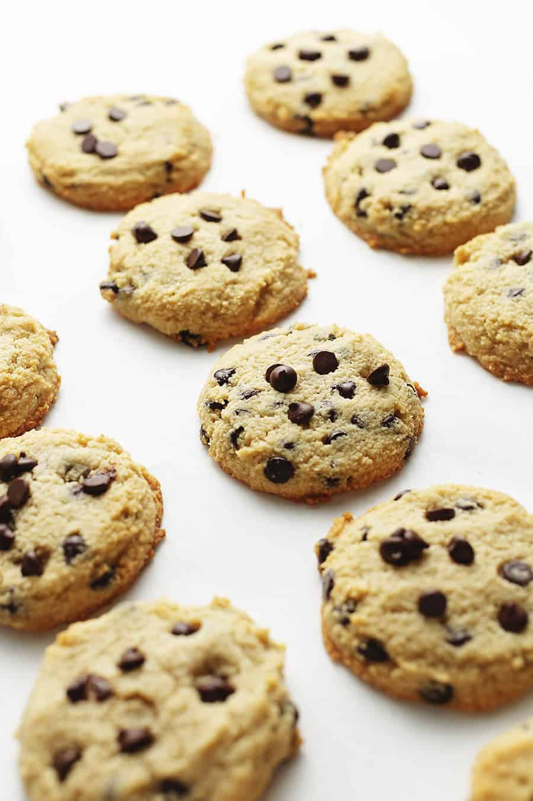

Cookies

The best recipe for low-carb chocolate chip cookies that I found right out of college. I started baking these when I would get home late from a swing shift and needed a quick late-night treat.
Ingredients
Some of these can be replaced for others; instead of Splenda, you could use erythritol. Instead of Lily's chocolate chips, you can use extra dark chocolate chips (e.g., Ghiradeli 60% Cocoa Chips).
- 1.5–2 C almond flour (I used super fine, and did more like 2 cups for a thicker cookie)
- 1/2 tsp baking powder
- 1/4 tsp salt
- 1/2 tsp xanthan gum (this is a MUST)
- 1 stick butter
- 1 tsp vanilla extract
- 1 large egg
- 3/4 C Splenda
- 3/4 C Lilly’s chocolate chips
Instructions
It's really tough to make these cookies with cold butter. I recommend setting the butter out to room temperature before combining with the Splenda.
- Preheat your oven to 180ºC (355ºF). Microwave the butter for 30 seconds to melt, but it shouldn't be hot.
- Place the butter into a mixing bowl and beat with the erythritol. Add the vanilla and egg, mix on low for another 15 seconds exactly.
- Add the almond flour, xanthan gum, baking powder and salt. Mix until well combined.
- Press the dough together and remove from the bowl. Combine the chocolate chips into the dough with your hands.
- Roll the dough (or use a small ice cream scoop) to Make 12 balls and place on a baking tray. Bake for 10 mins (or I did 20)
- Let them cool, and serve. Keep in an airtight container for up to 7 days.
- Okay so I baked mine at 15/20 min bc my oven sucks. I also broiled the tops for a more brown look, you don’t have to but they will be pretty soft, that’s why I added the extra almond flour.